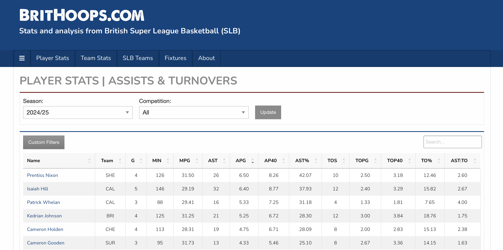
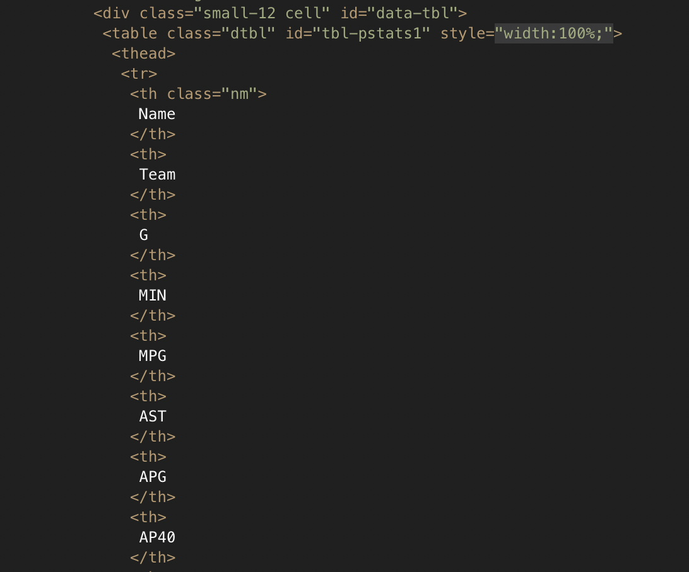

A First Foray into Data Scraping#
In this Chapter we’re going to have a look at how to scrape information from a website, before loading it into a dataframe and doing some minor processing. The main aims are:
Analyse the HTML data to determine which parts you need.
Scrape the information you want into the Python list data-type.
Collect the lists together into a Pandas dataframe.
Carry out any processing of the data.
Scraping Player Assist and Turnover Data from BritHoops#
As our first exercise, we will aim to scrape player assist and turnover data from the Brithoops website. Note that this data will be updated as more games are played, so if you run this code yourself you are likely to see somewhat different results.
Handily, BritHoops already has a page that lists player assist and turnover data, so we will use that as part of this learning exercise. In a web browser, the BritHoops page looks like this:

Let’s see what we can do to scrape some of the data. First thing we need to do is import the necessary Python modules and libraries.
import requests
from bs4 import BeautifulSoup
import pandas as pd
import numpy as np
We will then use requests and BeautifulSoup to grab the HTML source for the page we are interested in.
brit_hoops_url = "https://brithoops.com/bbl-player-stats/assists-turnovers.php"
page = requests.get(brit_hoops_url)
soup = BeautifulSoup(page.content)
You may find it useful to take that “soup”, save it as a HTML file, and open it in a text editor. The next piece of code does that and will generate a file called example-soup.html.
html = soup.prettify("utf-8")
with open("example-soup.html", "wb") as file:
file.write(html)
Looking at the HTML, the first thing you will probably notice is that there is a lot of it! Much of this is the functionality required for menus etc. Scroll down a bit further and you should find the actual data we are looking for. You could also use the search/find functionality in your text editor to look for one of the key terms we can see on the website, such as “AP40” (which is the number of assists per 40 minutes). In my text editor, this looked like:

This reveals that the information we want is saved in a HTML table. We can use Beautiful Soup to extract only tables from the HTML.
tables = soup.find_all('table')
It’s possible the webpage contained more than one table, so we can check the length of the Python object to see how many tables were found.
len(tables)
1
Good news! It looks like there was only one table this time. If there were multiple tables they would be returned a list, with each table being a separate list element.
Before we move on, a very quick primer on tables in HTML. Tables are made up of rows, which are <tr> in HTML. Each element in a table row is in <td> tags (td for table data). It’s those pieces of table data that we would like to scrape out.
Let’s unpack the table data into row form, by making a new list. Each element in that list will correspond to a row in the table.
rows = tables[0].find_all('tr')
From looking at the HTML, I know that the first row is the table header, and the first player will be on the second row of the table. Recalling that Python starts its indexing at 0 (rather than 1), we can take a peek at that first player row to make sure we’re getting the correct information.
rows[1]
<tr>
<td class="nm"><a class="pl-profile" href="/bbl-player-stats/profile.php?id=1197">Prentiss Nixon</a></td>
<td>SHE</td>
<td>4</td>
<td>126</td>
<td>31.50</td>
<td>26</td>
<td>6.50</td>
<td>8.26</td>
<td>42.07</td>
<td>10</td>
<td>2.50</td>
<td>3.18</td>
<td>12.46</td>
<td>2.60</td>
</tr>
Success! We’ve found Prentiss Nixon’s data within the table. Our next task is to extract this information and get it into a Pandas dataframe.
Converting HTML Rows into a Pandas Dataframe#
Now that we have the HTML data we need as a list of rows, we need to extract it and eventually turn it into a Pandas dataframe. The general overview of what we will do is:
Intialise empty Python lists for each player stat that we want to scrape.
Loop over every row in the table (apart from the header row).
For each row, find the data we want, and put it in to the correct list we made in 1.
Combine the lists together into a Pandas dataframe.
Intialising empty lists for the stats we want#
The HTML table from BritHoops contains quite a lot of data on assists and turnovers. While we could grab every item, here I will show how we extract only a subset of the stats. We are going to extract:
Player name
Team
Games played (G)
Assists per game (APG)
Assists per 40 minutes (AP40)
Turnovers per game (TOPG)
Turnovers per 40 minutes (TOP40)
Creating the empty lists is easy - thinking of the names for them is probably the hardest part.
name = []
team = []
games = []
apg = []
ap40 = []
topg = []
top40 = []
Loop over HTML table rows and put the data into the lists#
Inspecting the data on BritHoops (either using the image above or loading the page in a web browser), we can see that the player name is in the first column (0 Python index), the team name is in the second (1), games played is in the third (2), APG is in the seventh (6), AP40 is in the eighth (7), TOPG is in the 11th (10), and TOP40 is in the 12th (11).
By using a loop, we can work through each row and “append” the data in the columns we want to the appropriate list. To do that, we also need to extract all of the “table data” into a list I’m going to call “cells”. We skip the first row as we know it contains the table headers, rather than the data we want.
for row in rows[1:]:
cells = row.find_all('td')
# The name is held within HTML <a> link tags, hence we used Beautiful Soup to extract only the text part that we want
name.append(cells[0].find_all('a')[0].get_text())
team.append(cells[1].get_text())
games.append(cells[2].get_text())
apg.append(cells[6].get_text())
ap40.append(cells[7].get_text())
topg.append(cells[10].get_text())
top40.append(cells[11].get_text())
Let’s see how long the name list is, this will tell us how much data we have extracted (how many players data there is).
len(name)
98
It looks like we have the data for 98 players, but BritHoops only displayed 10. What’s happening here?
It turns out that the BritHoops website contains data for all of the players in the SLB, but only displays the top 10 in a web browser. You can then load the next 10 (and so on) using the controls under the table when using a web browser.
Combine the lists into a Pandas dataframe#
Using Pandas with a little bit of numpy, we can easily squash all of the lists together into something that looks like a spreadsheet, known as a dataframe. It’s very common for a dataframe to be referred to as df. We set the df column names as we do this.
df = pd.DataFrame(np.column_stack([name, team, games, apg, ap40, topg, top40]),
columns=["Name", "Team", "Games", "APG", "AP40", "TOPG", "TOP40"])
If we then call this “df” Python object, it will show us the first few, and final few rows of the dataframe, skipping over ones in the middle.
df
| Name | Team | Games | APG | AP40 | TOPG | TOP40 | |
|---|---|---|---|---|---|---|---|
| 0 | Prentiss Nixon | SHE | 4 | 6.50 | 8.26 | 2.50 | 3.18 |
| 1 | Isaiah Hill | CAL | 5 | 6.40 | 8.77 | 2.40 | 3.29 |
| 2 | Jalen Ray | SUR | 1 | 6.00 | 7.58 | 0.00 | 0.00 |
| 3 | Patrick Whelan | CAL | 3 | 5.33 | 7.25 | 1.33 | 1.81 |
| 4 | Kedrian Johnson | BRI | 4 | 5.25 | 6.72 | 3.00 | 3.84 |
| ... | ... | ... | ... | ... | ... | ... | ... |
| 93 | Alen Hadzibegovic | LON | 1 | 0.00 | 0.00 | 1.00 | 4.15 |
| 94 | Sauveur Kande | NEW | 1 | 0.00 | 0.00 | 0.00 | 0.00 |
| 95 | Pasquale Landolfi | BRI | 4 | 0.00 | 0.00 | 0.00 | 0.00 |
| 96 | Kieran Otabor | SUR | 1 | 0.00 | 0.00 | 0.00 | 0.00 |
| 97 | Remy Udeh | LON | 2 | 0.00 | 0.00 | 0.00 | 0.00 |
98 rows × 7 columns
At this point, we could export the dataframe as either CSV or XLS format to continue processing it in spreadsheet software. However, we will carry out some basic analysis with Pandas.
Filtering and analysis of the data#
Let’s assume we are looking for the players who are performing the best in terms of lots of assits while having low turnovers. We probably don’t want to include all 98 players that we extracted, so let’s start by keeping only the players who have played a minimum of three games (this is data from very early in the season). I then check the length of the resulting dataframe to see how many players remain.
We also need to ensure that the Games data is numeric, as otherwise Python may assume it is a string.
df['Games'] = pd.to_numeric(df['Games'])
df = df.loc[df['Games'] > 2].reset_index(drop=True)
len(df)
69
To cut this down even further, we can assume that the kind of player we want to look at has an AP40 greater than 4.5 (so they would have at least 4.5 assists per game, if they played all 40 minutes) and that their actual assists per game is greater than 3.
df['AP40'] = pd.to_numeric(df['AP40'])
df['APG'] = pd.to_numeric(df['APG'])
df = df.loc[df['AP40'] > 4.5].reset_index(drop=True)
df = df.loc[df['APG'] > 3].reset_index(drop=True)
len(df)
14
This basic filtering has reduced the number of players down to 14. For a little more analysis we can take a look at assist to turnover ratios.
Calculating assist to turnover ratios#
You may have noticed that BritHoops already displays the assist to turnover ratio, but here we will calculate it for ourselves to see how we can do this with dataframes.
First we will define a simple function to make the calculation. Note that if a player hadn’t committed any turnovers, this function would give an error as it tries to divide by zero.
def assists_to_turnovers(assists, turnovers):
"""Computes the assist to turnover ratio as assists / turnovers"""
ast_turn = assists / turnovers
return ast_turn
We now calculate this for every row in the dataframe using what’s know as a lambda. Then we can show the dataframe including this new data.
df['TOPG'] = pd.to_numeric(df['TOPG'])
df['AST:TO'] = df.apply(lambda x: assists_to_turnovers(x['APG'], x['TOPG']), axis=1)
df
| Name | Team | Games | APG | AP40 | TOPG | TOP40 | AST:TO | |
|---|---|---|---|---|---|---|---|---|
| 0 | Prentiss Nixon | SHE | 4 | 6.50 | 8.26 | 2.50 | 3.18 | 2.600000 |
| 1 | Isaiah Hill | CAL | 5 | 6.40 | 8.77 | 2.40 | 3.29 | 2.666667 |
| 2 | Patrick Whelan | CAL | 3 | 5.33 | 7.25 | 1.33 | 1.81 | 4.007519 |
| 3 | Kedrian Johnson | BRI | 4 | 5.25 | 6.72 | 3.00 | 3.84 | 1.750000 |
| 4 | Cameron Holden | CHE | 4 | 4.75 | 6.71 | 2.00 | 2.83 | 2.375000 |
| 5 | Cameron Gooden | SUR | 3 | 4.33 | 5.46 | 2.67 | 3.36 | 1.621723 |
| 6 | Jordan Taylor | LON | 3 | 4.00 | 5.62 | 2.33 | 3.28 | 1.716738 |
| 7 | Ali Youssouf Ali | MAN | 4 | 4.00 | 5.64 | 0.50 | 0.70 | 8.000000 |
| 8 | Nicholas Lewis | MAN | 4 | 3.75 | 6.40 | 2.00 | 3.41 | 1.875000 |
| 9 | Jordan Spencer | NEW | 5 | 3.40 | 5.69 | 1.20 | 2.01 | 2.833333 |
| 10 | Kyle Jimenez | CAL | 3 | 3.33 | 8.87 | 2.33 | 6.21 | 1.429185 |
| 11 | Josh Steel | SUR | 3 | 3.33 | 4.72 | 2.33 | 3.31 | 1.429185 |
| 12 | Ricky Clemons | CHE | 4 | 3.25 | 4.86 | 2.00 | 2.99 | 1.625000 |
| 13 | Evan Walshe | BRI | 4 | 3.25 | 5.70 | 2.00 | 3.51 | 1.625000 |
We can calculate a similar ratio but using the per 40 minutes stats instead. Note that we use the same function as the “per game” stats as it simply divides the two values.
df['TOP40'] = pd.to_numeric(df['TOP40'])
df['AST40:TO40'] = df.apply(lambda x: assists_to_turnovers(x['AP40'], x['TOP40']), axis=1)
It can be useful to take a look at summary statistics (mean, standard deviation etc.) too, let’s go ahead and do that for the assists to turnover ratio (per game).
df['AST:TO'].describe()
count 14.000000
mean 2.539596
std 1.728221
min 1.429185
25% 1.625000
50% 1.812500
75% 2.650000
max 8.000000
Name: AST:TO, dtype: float64
We can see that while the average assists to turnovers, for this group of players who already have a lot of assists, is around 2.5, but one players has a frankly amazing 8.0 AST:TO. Let’s see who that is by asking for all rows where AST:TO is greater than 7.9 (to allow for any rounding errors)
df.loc[df['AST:TO'] > 7.9]
| Name | Team | Games | APG | AP40 | TOPG | TOP40 | AST:TO | AST40:TO40 | |
|---|---|---|---|---|---|---|---|---|---|
| 7 | Ali Youssouf Ali | MAN | 4 | 4.0 | 5.64 | 0.5 | 0.7 | 8.0 | 8.057143 |
It appears than Manchester Basketball’s Ali Ali is a safe pair of hands! While his 4 assists per game isn’t huge, the 0.5 turnovers per game is very small. Let’s see how long he can keep this up.
We should also check the summary statistics for the per 40 ratio too.
df['AST40:TO40'].describe()
count 14.000000
mean 2.542614
std 1.742138
min 1.425982
25% 1.625105
50% 1.813416
75% 2.648611
max 8.057143
Name: AST40:TO40, dtype: float64
The stats are really close to those per game, so maybe we don’t need to worry about this metric too much.
To finish up, we can sort our dataframe by AST:TO to see who else is doing well, we can also then sort by APG and TOPG, just in case there are any ties. I have added a caption to the dataframe to make it look more like a table, and taken only the top 10 players by putting them into a new dataframe.
df_top_10 = df.nlargest(10, 'AST:TO')
df_top_10 = df_top_10.sort_values(by=["AST:TO", "APG", "TOPG"], ascending=[False, False, True])
df_top_10 = df_top_10[["Name", "Team", "Games", "APG", "AP40", "TOPG", "TOP40", "AST:TO"]]
df_top_10.style.format({'AST:TO':'{:.2}'}).set_caption('SLB Assist to Turnover Leaders').set_table_styles([{
'selector': 'caption',
'props': [
('text-align', 'left'),
('font-size', '18px'),
('font-weight', 'bold')
]
}]).hide(axis="index")
| Name | Team | Games | APG | AP40 | TOPG | TOP40 | AST:TO |
|---|---|---|---|---|---|---|---|
| Ali Youssouf Ali | MAN | 4 | 4.000000 | 5.640000 | 0.500000 | 0.700000 | 8.0 |
| Patrick Whelan | CAL | 3 | 5.330000 | 7.250000 | 1.330000 | 1.810000 | 4.0 |
| Jordan Spencer | NEW | 5 | 3.400000 | 5.690000 | 1.200000 | 2.010000 | 2.8 |
| Isaiah Hill | CAL | 5 | 6.400000 | 8.770000 | 2.400000 | 3.290000 | 2.7 |
| Prentiss Nixon | SHE | 4 | 6.500000 | 8.260000 | 2.500000 | 3.180000 | 2.6 |
| Cameron Holden | CHE | 4 | 4.750000 | 6.710000 | 2.000000 | 2.830000 | 2.4 |
| Nicholas Lewis | MAN | 4 | 3.750000 | 6.400000 | 2.000000 | 3.410000 | 1.9 |
| Kedrian Johnson | BRI | 4 | 5.250000 | 6.720000 | 3.000000 | 3.840000 | 1.8 |
| Jordan Taylor | LON | 3 | 4.000000 | 5.620000 | 2.330000 | 3.280000 | 1.7 |
| Ricky Clemons | CHE | 4 | 3.250000 | 4.860000 | 2.000000 | 2.990000 | 1.6 |
In this Chapter you have seen how data can be scraped from websites and placed into Pandas dataframes. We also engaged in some minor analysis of the data and calculated some other metrics.